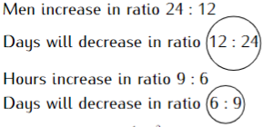

9 Chapter Nine: Rate, Ratio, Proportion, and Percentage
Rate, Ratio, Proportion, and Percentage
Rate, is a comparison of one quantity with another of a different kind. If a van takes three hours to travel a distance of \(180 \,Km\), then the van is traveling at an average rate of \(60 \,Km/hr\).
Ratio, is a way of comparing two similar quantities. If John is 7 years old and his sister Jane is 16 years old, then John’s age is \(\frac{7}{16}\) of Jane’s age and the ratio of their ages is 7:16. In stating the ratio the unit must be the same.
Proportion, is a comparison of two or more ratios. For example, if a, b, and c are three numbers such that $ a:b:c = 3:5:7$ then a, b, and c are said to be proportional to 3, 5, and 7 and the relationship should be integrated to mean \(\frac{a}{3}=\frac{b}{5}=\frac{c}{7}\). In the same way,$ a:b =3:5, b:c = 5:7,$ and \(a:c = 3:7\).
9.1 Solved Examples
If ,\(a:b=3:5\) and \(b:c=7:9\), Find the ratio: \(a:c\). \((3mks)\)
\(a:b=3:5\)
\(b:c=7:9\)
\[ \begin{matrix} a&:&b&:&c \\ 7(3&:&5)\\ \,&\,&\,(7&:&9)5\\ \\ a&:&b&:&c \\ 21&:&35&:&45\\ \end{matrix} \] \(\therefore \, a:c=21:45\)
Twelve laborers each working six hours a day, take twelve days to plough a piece of land. How long would it take 24 laborers each working 9 hours a day to plough the same piece of land? \((3mks)\)
\[ \begin{matrix} men&\,&hours&\,&days\\ 12&\,&6&\,&12\\ 24&\,&9&\,&? \end{matrix} \] 
\[Days\, needed: \cancelto{\frac{1}{2}}{\frac{12}{24}}\times\cancelto{\frac{2}{3}}{\frac{6}{9}}\times12=4\] \(\therefore\) The laborers would take \(4\) days
A blend of juice is made from mango and passion. The cost of four limes of mango is \(Ksh.\, 180\) and two limes of passion is \(Ksh. \,160\). In what ratio should the juice be mixed such that by selling the mixture at \(Ksh.\, 90\) per lime, a profit of 20% is realized? \((3 mks)\)
| Juice | Mango | Passion | Blend |
|---|---|---|---|
| Ratio | 1 | n | \(1+n\) |
| cost per litre | 45 | 80 | |
| Total cost | 45 | 80n | 45+80n |
\[ \begin{split} Buying \,price (B.P) \Rightarrow \frac{45+80n}{1+n}&=100\%\\ Selling \,Price (S.P) \Rightarrow 90&=120\%\\ B.P \Rightarrow \frac{90\times 10\cancel{0}}{12\cancel{0}}&=75\\ \frac{45+80n}{1+n}&=75\\ \end{split} \]
\[ \begin{split} 45+80n&=75+75n \\5n&=30\\ \frac{\cancel{5}n}{\cancel5}&=\frac{\cancelto{6}{30}}{\cancel5}\\ \frac{n}{1}&=\frac{6}{1}\\ \Rightarrow \frac{1}{n}&=\frac{1}{6}\\ \therefore 1:n&=1:6 \end{split} \]
A cold water tap can fill a bath in 15 minutes while a hot water tap can fill it in 10 minutes. The drainage pipe can empty it in 8 minutes. The cold water and hot water taps are opened for 2 minutes. After two minutes all three taps are opened. Find the total time taken to fill the bath. \((3 mks)\)
The 3 taps rate of filling the bath in 1 min:
\[ \begin{split} Cold \,water\, tap &=\frac{1}{15}& \\ Hot\, water \,tap &=\frac{1}{10}& \\ Drainage \,tap &=\frac{1}{8}& \\ \textbf{Fraction by hot and cold tap in 2 min:}\\ \left (\frac{1}{15}+\frac{1}{10}\right)*2&=\frac{1}{3} \end{split} \] Fraction of water unfilled:
\[\Rightarrow 1-\frac{1}{3}=\frac{2}{3}\]
Fraction of water by 3 taps in 1 min:
\[\frac{1}{15}+\frac{1}{10}-\frac{1}{8}=\frac{1}{24}\]
Time to fill the remaining water:
\[\frac{2}{3}\div \frac{1}{24}\Rightarrow \frac{2}{\cancel{3}} \times \cancel{24}^8=16 \]
\(\therefore\) Total time \(\Rightarrow 16+2=18\) min.
A plastic container manufacturer increased the radius of a cylindrical can by 22.5% but, decreased its height by 30%. Calculate in two decimal places the percentage increase in the volume of the can. \((3mks)\)
\[ \begin{split} Volume&=\pi r^2h\\Old\, volume &=\pi r^2h&\\ New \,radius&=1.225r\\New\, height&=0.7h\\ New \,volume&=\pi(1.225r)^2(0.7h)\\ &=1.225^2\times 0.7\times r^2\times h\\ & \approx 1.05044\pi r^2h \end{split} \]
\[ \begin{split} Volume\, increase&=1.05044\pi r^2h-\pi r^2h\\ &=0.05044\pi r^2h\\ Percentage \,increase &=\frac{Increase}{Old \,volume}\times 100\\ &=\frac{0.05044\cancel{\pi r^2h}}{\cancel{\pi r^2h}}\times 100\\ &\approx5.044\% \\ \therefore \% \,increase&=5.04\% \end{split} \]
A photograph is reduced in the ratio \(2:7\) for a newspaper, and further reduced in the ratio \(5:7\) for an exercise book. Find the ratio of the newspaper size to textbook size. \((3mks)\)
Five plows working 8 hours daily complete a piece of work in 6 days. How long will it take 12 plows working 5 hours a day to complete the same work? \((2mks)\)
There are two grades of beans, grade A and grade B. Grade A costs \(Ksh. \,100\) per kg and grade B costs \(Ksh.\, 80\) per kg. In what ratio must the two grades be mixed in order to produce a blend worth \(Ksh.\, 95\) per kg? \((3mks)\)
A tradesman blends 340kg of tea costing \(Ksh. \,80\) per kg with 160kg of tea costing \(Ksh.\, 100\) per kg. At what price must he sell the mixture, to make a 25% profit? \((3mks)\)
Oil flows through a pipe whose cross-sectional radius is 7cm at a rate of 2m/min. Calculate how long it will take the pipe to fill a 28,000 litres tank. \((3 mks)\)
Nyamu and Gatungo working together can do a piece of work in 6 days. Gatungo working alone would take 10 days to complete the work. They start working together but, after 4 days Gatungo leaves and the remaining work is done by Nyamu. Find how long Nyamu takes to complete the remaining work. \((4mks)\)
Five constructors can build a 25-meter-long wall in 10 days. What length of wall can 10 constructors working at the same rate build in 8 days? \((3mks)\)
A businesswoman bought 160 mangoes at \(Ksh. 50\) for every four mangoes. She sold some of them at \(Ksh. \,30\) for every three and the rest at \(Ksh.\, 30\) for every four. If she made a 33\(\frac{1}{2}\)% loss, calculate the number of mangoes sold at \(Ksh.\, 30\) for every four. \((3mks)\)
One hundred and twenty examiners each marking 90 papers per day are needed to mark an examination in 2 weeks. How many days would 180 examiners each marking 35 papers per day take to mark the same examination? \((3mks)\)
A group of 15 soldiers set off with enough food to last 6 days. After 6 soldiers evacuated. How many more days will the food last for the remaining soldiers? \((3 mks)\)
In the Moi University Christian Union choir, the ratio of male to female is \(2:3\). On one Sunday service, 10 male members were absent and six new female members joined the choir as guests for that day. If on this day the ratio of males to females was,$ 1:3$,, how many regular members does the choir have? \((3mks)\)
The ratio of men to women in Njega Boys High School B.O.G which consists of 45 members is \(7: 2\). Find the number of women required to join the existing members so that the ratio of men to women changes to \(5: 4\). \((3mks)\)
A coffee trader mixes two brands of coffee, A and B to obtain 40kg of the mixture worth \(Ksh.\, 2,600\). If brand A is valued at \(Ksh.\, 70\) per kg and brand B is valued at \(Ksh.\, 55\) per kg. Calculate the ratio in its simplest form in which brands A and B are mixed. \((4mks)\)
Nyamu bought sorghum and millet at \(Ksh.\,65\) per kg and \(Ksh.\,40\) per kg respectively. He then mixed them and sold the mixture at \(Ksh.\,60\) per kg making a profit of 20%. Determine the ratio of sorghum to millet in the mixture. \((3mks)\)
The ratio of a spherical balloon increases by 4% as it rises up in the air. Find the percentage increase in its;
a) Surface area. \((2mks)\)
b) Volume \((2mks)\)
A dealer has two types of grades of tea, x and y. Grade x costs \(Ksh.\, 150\) per kg and grade y costs \(Ksh.\, 170\) per kg. If he mixes \(x\) and \(y\) in the ratio \(2:3\) to make a brand of tea which he sells at \(Ksh.\, 180\) per kg, calculate the percentage profit that he makes. \((3 mks)\)
In what ratio will coffee grade A cost \(Ksh.\, 85\) per kg to be mixed with grade B costing \(Ksh.\,55\) per kg so that a profit of 25% is realized by selling the mixture at \(ksh.\,80\) per kg? \((3mks)\)
A mixture contains two powders A and B with masses in the ration \(4: 10\). If the mixture costs \(Ksh.\, 650\) per kg and powder A costs \(Ksh. \,550\) per kg, find the cost of a kg of powder B. \((3 mks)\)
It would take 20 workers 12 days to spray a piece of land. If they work for 8 hours a day, how long will it take 24 workers if they work 12 hours a day to three-quarters of the same land? \((3mks)\)
A farmer has enough feed to last 35 pigs for 24 days. If he buys 5 more pigs, how long will the feed last? \((3mks)\)
Mukami, a juice blender mixes two brands of Juice A and B to obtain 90ml of the mixture worth \(Ksh.\, 165\) per litre. If brand A is valued at \(Ksh.\, 175\) per 1 litre bottle and brand B at \(Ksh.\, 150\) per 1-litre bottle, calculate the ratio in which the bands A and B are mixed. \((2mks)\)
Twelve men can build 6 huts in 21 days. Find the number of men working at the same rate that will build 9 similar huts in 14 days. \((3mks)\)
A rectangular dam with a surface area of 24 ares has a uniform depth of 5 m is to be drained for renovation. A pipe drains it at the rate of 250 litres per second. How long does it take to empty the dam? \((2mks)\)
Tap A can fill a tank in 12 minutes while tap B can fill the same tank in 15 minutes. Another tap C can empty the tank when full in 20 minutes. Starting with an empty tank, the three taps are left open for 4 minutes after which tap A is closed. How much longer does it take to fill the tank? \((3mks)\)
The radius of a cylindrical tin is increased by 20% while its height is decreased by 10%. If the capacity of the old tin is \(250\,cm^3\), find the capacity of the new tin. \((3mks)\)
The radius of a cylindrical container is increased by 28% while its height is reduced by 15%. In 4 significant figures find the percentage increase in the volume of the juice in the container. \((3mks)\)
Pipe X and Y can fill a tank in 15 minutes and 30 minutes respectively. Pipe Z can empty the full tank in 25 minutes. Starting with an empty tank, how long does it take to fill the tank if:
a) All the three pipes are open? \((1mk)\)
b) Pipe Y is closed after 10 minutes? \((3mks)\)
\(2,280 \,cm^3\), of milk was shared by three children, Josephine, Florence, and Moses in the ratio \(\frac{1}{4}:\frac{1}{2}:\frac{1}{5}\),, What volume did Moses get: \((2mks)\)
Sewage is flowing through a cylindrical pipe at the speed of \(0.95\,m/s\). If the pipe has an internal radius of 14cm, Calculate:
a) The volume of sewage delivered by the pipe per second in \(cm^3\) (Take = \(\frac{22}{7}\)) \((2mks)\)
b) The depth to which the pipe fills a rectangular tank of base dimensions \(6.5m \times 5.2m\) in one hour to the nearest 0.1 metres. \((3mks)\)
c) The time is taken, to the nearest second for the pipe to fill a 50,000-litre tank tub (initially empty) which has a hole at the base that drains the tub at the rate of 524 litres per minute. \((5mks)\)
Three potters; A, B, and C work together to make a certain number of pots. If Potter C was to work alone he would take 4\(\frac{4}{9}\), hours to complete the job. If all working together they will take 1hr 40min to complete the job. They all started working together however, potter B left after the first 40 minutes, while Potter C left 20min later. Potter A took a further 1hr 46min. Calculate how long it would take if all the potters were made by:
a) Potter A alone? \((6mks)\)
b) Potter B alone? \((2mks)\)
c) Potter A and C alone? \((2mks)\)
Boniface purchased 3 brands of coffee A, B, and C. The cost prices of the brands were \(Ksh.\, 50\), \(Ksh.\, 68\) and \(Ksh. \,75\) per kilogram respectively. He mixed the brands in the ratio of \(7:5:3\) respectively. After selling the mixture, he made a profit of 32%.
a) How much profit did he make per kilogram of the mixture? \((4mks)\)
b) After one year, the cost price of each brand was increased by 15%.
i) For how much did he sell one kilogram of the mixture to make 20% Profit. \((3mks)\)
ii) What would have been his percentage profit if he sold one kilogram of the mixture at \(Ksh. \,85.60\)? \((3mks)\)
A solution whose volume is 160 litres is made up of 75% milk and the rest water. When x litres of milk is added the percentage of water drops to 20%
a) Find the value of \(x\) \((4mks)\)
b) The new solution is diluted further by the addition of 120 litres of water. Calculate the percentage of milk in the resulting solution. \((2mks)\)
c) A blend is made by mixing 10 litres of the solution in (b) above with 20 liters of the original solution. Calculate in the simplest form, the ratio of water to that of milk in the blend. \((4mks)\)
Four hundred and twenty litres of homogeneous paint is made by mixing three paints P, Q, and R. The ratio by volume of paint P to point Q is \(3: 4\) and paint Q to paint R is \(1: 2\). Paint P costs \(Ksh.\, 150\) per litre, paint Q \(Ksh. \,180\) per litre and paint R \(Ksh.\, 120.50\) per litre. Determine:
a) The volume of each type of paint in the mixture. \((5mks)\)
b) The amount of money spent in making one litre of the mixture. \((3mks)\)
c) The percentage profit made by selling the mixture at \(Ksh.\, 205\) per litre. \((2mks)\)
Olemapenzi’s cows decreased by 16% in 2014 to stand at 2100 cows at the beginning of 2015. The number of cows increased by 24% in 2015 and also increased by 20% in 2016.
a) Determine the number of cows Olemapenzi had at the beginning of:
i) The year 2014 \((2mks)\)
ii) The year 2016 \((2mks)\)
iii) The year 2017 \((2mks)\)
b) Determine the percentage increase in Olemapenzi’s cows between:
i) 2014 and 2016 \((2mks)\)
ii) 2014 and 2017 \((2mks)\)